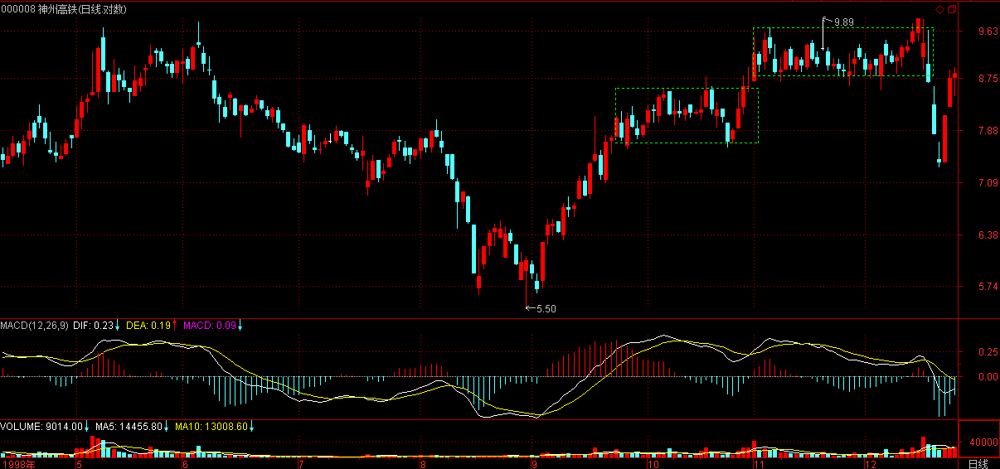

(2007-10-30 22:05:40)
下面都是梦话，千万别相信。
明天要出差，没心情写复杂的东西，就说说故事，继续说点老皇历。
前面说了做顶出货的，今天说说做底吃货的。准确说，如果是吸货，无所谓底部。只要有筹码有钱有足够的时间，什么成本拿的货，其实都可以摊下来的。特别是那些对走势有足够影响的分力，后面各级别的顶是自己的、底也是自己的，差价都是自己的，什么成本不能下来？
为什么很多庄家最后都做死，就是没有什么成本概念。说实在，很多，甚至可以说的大多数庄家，都还是散户心态，见到市值起来就晕头，却忘记了，股票只是一个凭证，一个抽血的凭证，能把血抽到才是真本事。
大多数愚蠢的庄家，都希望玩一种收集派发的游戏，但这种游戏经常把自己放到火上去了。实际上，最关键是成本的下降。
一般来说，如果成本没有到0，根本没有大力拉抬的必要，就要来回折腾，把筹码成本都洗到0了，才有必要去拉抬。
而真正的拉抬，是不需要花钱的。如果拉抬要花钱，证明价格已经高了，资金流入已经跟不上，早该回头砸了。
经常是早砸一天和晚一天，就是两重天地，这里需要的是经验和悟性以及感觉。
基本的0成本筹码，然后反复拉抬都变成纯负数的，最后搞出N的N次方倍后，实在不想玩了，满手都是负成本的筹码，再大甩卖，谁要都死，这才是真的最安全的方法。
当然，甩卖不一定是跳楼的，还可以是跳高的，甚至是批发的，手法多多，只是不同的故事而已。
因此，要玩这个游戏，关键是要有基本的筹码，这筹码，当然可以抢回来，例如，以前就说过，曾经和别人抢东西，从8元一口气抢到20多，然后一个大平台，最后再飞起一波，然后就该干什么是什么了。【韶山映山红】600864岁宝热电，现在的哈投股份。】
这是一种方法，但这种方法过于无聊，一般都不这样干。
当然，最直接的就是能在最低的位置把该拿的全拿了，这是最考功夫的，这里说一个曾经的经典例子。【韶山映山红】000008亿安科技，现在的神州高铁。】
这例子，还没动手，老鼠仓就抢起来了。因此，后面的任务十分艰巨，首先要抢到足够的东西，其次还有成本不能太高，第三还要把老鼠仓洗出来，最后，这时间还不能太长。【韶山映山红】1，抢筹。2，低成本。3，清门户。4，短时间。】这怎么看都是一个不可能完成的任务。
首先，在一个大的压力位上顶着，接了所有的解套盘。老鼠仓是不会接解套盘的，别的小玩意就更不会了。然后在那位置上不断地假突破。一般在强压力位上，一般人不会拼命给你冲关的，而不断的假突破，就让所有技术派的人把筹码交出来了。但这时候，买到的，是最高的成本，除了历史上的高位套牢，所有人的成本都要比这低。
这时候，把帐上所有的钱基本都打光了，还有一部分。当时，有一种透支是需要当天平仓的，用剩下的钱，借了该种透支。然后那天疯狂地买，早上就把所有的钱加透支全买完了，因为前面N次的假突破，突破后根本没人管，需要的就是这种效果。
下午，需要平仓了。不断交涉是否可以不平，结果是不可以。很痛苦状地开始平仓行动，瀑布一样，价格下来了，早上买的，亏损着全砸了出去，结束一天悲惨的交易。价格也砸穿前面一直坚持的平台，收盘后，有人被套被人追债的传闻马上到处流传。【韶山映山红】1998年12月16日，市场突然传闻亿安科技的庄家因透支过度，被强行平仓。当日股价跌了4.88%。 】
第二天，所有的老鼠仓，所有知道消息的都蜂拥而出，
然后是第三天，也是这样。
这时候，在N个别处的遥远的地方，所有的抛盘都被吸到一个无名的口袋里，所有出逃的人都在庆幸，因为第四天依然大幅度低开。
突然，强力的买盘如同地底喷薄的熔岩，任何挂出的筹码都被一扫而光。任何人都没反应时，他们已经没有任何买入的机会了，
第二天，依然如此，一开盘，就迅速让任何人失去买入的机会，而前面来不及逃跑的，却依然抛着。
第三天，快回到原来的平台了，在那里，买盘突然没了，仿佛从来没有任何买盘出现过，所有的人都不知道该怎么办好。

如果是V型反转，那上面平台的巨大套牢却没人敢去顶破，如果是超跌反弹，那所有的空间都耗尽。经过市场一段的沉寂后，卖盘再次涌出，多杀多又开始了，没人敢接，但价格却永远也回不到反弹第二天的位置，在一个狭窄的空间里，抛掉的人，没空间回补，想买的人，又怕上面不远的巨大套牢区，以及可能的超跌反弹骗线。但价格不跌了，所有的筹码，都掉入一个巨大的口袋。【韶山映山红】网文：“连连破位下跌，被市场人士普遍理解成庄家出货末期的手法，而缠中说禅却反其道而行之，利用传闻和破位走势制造恐慌，大举吃货，可见其聪慧与残忍。这种手法被后人总结为跌停板洗盘法，广为流传。”】
最后，在一个谁都想不到的时刻，价格迅速地脱离上面的套牢区，所谓技术上的巨大压力区，突破时，连15分钟都不到就过去了。
至于老鼠仓的命运，在砍掉价格N倍的位置，老鼠仓最后又重新进来，那是另一个故事了。
关于广东欣盛投资顾问有限公司、广东中百投资顾问有限公司、 广东百源投资顾问有限公司、广东金易投资顾问有限公司违反证券法规行为的处罚决定
证监罚字[2001]7号
广东欣盛投资顾问有限公司、广东中百投资顾问有限公司、广东百源投资顾问有 限公司、广东金易投资顾问有限公司：
中国证券监督管理委员会对广东欣盛投资顾问有限公司、广东中百投资顾问有限公司、广东百源投资顾问有限公司、广东金易投资顾问有限公司违反证券法规的行为进行了调查。
一、违规事实
上述四家公司自1998年10月5日起，集中资金，利用627个个人股票帐户及3个法人股票帐户，大量买入“深锦兴”（后更名为“亿安科技”） 股票。持仓量从1998年10月5日的53万股，占流通股的1.52%，到最高时2000年1月12日的3001万股，占流通股的85%。同时，还通过其控制的不同股票帐户，以自己为交易对象，进行不转移所有权的自买自卖，影响证券交易价格和交易量，联手操纵“亿安科技”的股票价格。截至2001年2月5日，上述四家公司控制的627个个人股票帐户及3个法人股票帐户共实现盈利4.49亿元，股票余额77万股。
二、处罚决定
上述四家公司的行为违反了《证券法》第七十一条、第七十四条的规定，构成《证券法》第一百八十四条、第一百九十条所述的行为。依据《证券法》第一百八十四条、第一百九十条的规定，决定：
（一）没收上述四家公司违法所得4.49亿元，并罚款4.49亿元；
（二）责令上述四家公司在收到本处罚决定之日起3个月内，在交易所监督下卖出剩余股票77万股，并注销违规开立的个人股票帐户，盈利予以没收。 上述四家公司应自收到本处罚决定之日起15日内，将罚没款汇交中国证券监督管理委员会（开户银行：中国建设银行北京城建支行月坛南街分理处，帐号2610044690，由该银行直接上缴国库），并将付款凭证的复印件送中国证监会稽查局执行监督处备查。
上述四家公司如对本处罚决定不服，可在收到本处罚决定之日起60日内向中国证监会提出行政复议；也可以在收到本处罚决定之日起三个月内直接向有管辖权的人民法院提起行政诉讼。复议和诉讼期间，上述决定不停止执行。
二○○一年四月二十三日
【网文】一字涨停板：揭秘一种新型坐庄手法
好运2008
2015-05-31 09:10
本论牛市谁最赚钱？
1，以重组的名义，制造一字涨停板的新型庄家。
2，职业实力游资。
3，有经验的老股民融资客。
4，新股民。
本轮牛市谁不赚钱？
1，有投资洁癖的书呆子型价值投资者。
2，半桶水老股民。
3，玩场外高比例配资的高杠杆赌徒。
4，不炒股票的。
重点说说最赚钱的一种新型坐庄手法。
特别申明：这完全是我周末分析股市，无意中研究出来的。
手握巨资的实力资金（包括各种私募，房地产出来的资金，其他产业资金，等等，甚至直接是上市公司本身），先收集筹码，按自己的实力或者集团资金的实力，收集足够的筹码，然后找等米下锅类上市公司，提出1，收购该公司，2，增发注入资产。（我估计这个过程有懂二级市场喜好的专业人士参与策划）
这个谈判的过程是暗地里的，你懂的。
于是停牌重组。
于是，出来发布公告，公布靓丽逆天的重组公告。
于是，一字涨停板。
于是，高位派发。
于是，赚得盆满钵满，坐庄结束。（收尾的讲故事阶段，委托一些专门机构去完成）
这样的坐庄过程，让老庄家哭红了眼：恨不相逢未嫁时啊！如果德隆活到今天，它还会崩盘吗？
这个新型坐庄模式，将老坐庄模式最困难最费技巧和资金的＂拉升＂，＂洗盘＂阶段，全部用一字涨停板来完成了！天才啊！！
到目前为止，我还没看到这种新型坐庄模式有失败的案例。
论坛里，也有利于这种模式赚得盆满钵满的吧？
只是，我想问：这种模式合法吗？没有人管吗？
赚钱也太轻松了吧？
如果我有大把的钱，我也会！
皇甫娇 2015-05-31 10:35
所以二级市场做价差的都是苦主。玩资本的才是空手道大赢家。
(2007-10-31 15:13:50)
马上要去赶飞机，只能快速说两句。
昨天说了，关键看新的1分钟中枢位置，今天，这中枢依然没形成，当然，只要明天有所回落，这中枢就形成了，一旦中枢形成，后面就是第三类买卖点的问题，一个超简单的问题，就不用多说了。
今天资金的流入而出现九一现象，表明资金的进入只是以搏反弹的心态，而中石油出来，指数股还要表现，休息一下并不是太坏的事情。
今天，香港联交所罕见地出现风险提醒，这里有一个更重要的问题，如果香港是一个门面，请问，是不是希望内地的散户出去为40000点香港埋单？能量耗尽，谁都举不了杠铃，管理层真要好好想想了。
市场参与者可以继续疯狂，但管理层不可以，现在就是考验管理层智慧的时候了。借着期货出来，内地、香港一起最后疯一把，然后一地鸡毛，请问，这个局面一旦出现，谁负得起这个责？
现在，已经到了该换刀的时候，本ID边陪着市场玩这最后游戏，边等待这换刀的时刻。
虽然本ID在上周5555点下明确告诉了这个反弹，但依然用绿色字，只是希望各位在反弹中依然要保持最大的清醒。至于中短线的分析，昨天已经说得十分明确，就不重复了。
先下，晚上如果有时间，会写帖子的，再见。
(2007-10-31 22:33:19)
累了， 借点酒力，来首七律充数，在外只能将就写写，抱歉了。
即事
缠中说禅
无端生死入娑婆
八角磨盘自转磨
天局皆如人局幻
醒时犹作醉时疴
百年风雨茶三碗
万古文章梦一箩
海上浮云忽乱起
尘寰又舞几神魔
(2007-11-01 15:16:39)

今天的走势极端教科书，早上背驰后形成1分钟中枢的第二段，然后回跌构成第三段，这样1分钟的中枢就构成了，紧接着就是围绕这个中枢的震荡，下面需要等待的只是第三类买卖点问题。
大盘在这个位置进入短暂的无方向，更主要的等待是为了中石油。另外，周末消息面也是对心理的一个压力。不过，美国减息，也让国内的利息变动有了更多的顾忌，总之，一步错，步步错，现在只是开头，怎么收场，太让人担忧了。
当然，现在除了大的政策面的改变，单纯的利息变动并不足以根本影响市场，中石油的投机性短炒又等着，不过这次估计不会像神华那样顺利了。但一个足以吓死巴菲特的价格是肯定的，不过，这对巴没什么意义，人家面对的是全球市场，自然可以找到更好的机会。
只是，把亚洲最赚钱公司让别人用极低价格给买了，而现在又以极高价格回归，这里面的问题，难道不值得深思？
请问，谁该为此负责？
市场的规范，第一要点就是：谁干的事情谁负责。市场参与者，必须对市场风险的承担负责，而市场管理者，必须对市场的政策后果负责。想想当时建行的贱卖，中石油的贱卖，请问，是不是该论论这个责任问题了？
现在，期货又要被折腾了，请问，有谁敢站出来保证，最后不会是比建行、中石油的贱卖更无聊的闹剧？
晚上有应酬，有时间尽量写帖子，先下，再见。
(2007-11-01 23:21:23)
刚回酒店，打开电视，就听到一清华的垃圾教授说“四大皆空”的“四大”是指东南西北。清华，也就是这水平了，原谅他吧。
何谓四大？地大、火大、水大、风大。一般禅定没有到相应阶段，是不知道什么才是真正的地大、火大、水大、风大。注意，一般关于佛教的书，都是些无聊知识分子，根本就没有任何实际修行，胡乱解释。当然，胡适这种无聊人也敢说禅宗，所以这种人多了去了也就不奇怪了。
禅定和禅不是一回事情，禅定也不是所谓的思维修。就算你把佛教大词典全背下来，也和修行无关，这里讲的是真修实练，没有半分可以作假的地方。
我们整个可观察的物理世界，本质上只是地大、火大、水大、风大的粗分部分，没到初禅是不能实证地大的；没到二禅是不能实证火大的；没到三禅是不能实证水大的；没到四禅是不能实证风大的。
注意，四大和什么五行可没什么关系。五行，不出地大范围。别以为水就是水大，风就是风大，这四大也不是类似化学元素之类的玩意。更不是那些垃圾哲学教授所说的，四大和原始的什么什么主义相关。还有，也不能说坚硬属于地大，湿润属于水大，温暖属于火大，流动属于风大。
现实中的人体与世界，都是四大粗分部分的相缠。四大，必须实证才可知。科学所研究的范围，绝大部分不离地大。而相缠的另外三大的粗分部分，现代的科学，还知之甚少。
我们的病，本质上都是四大不调形成的。而地球上各地气候的不同，本质上就是不同共业结构所制造的四大结构的异同所造成。因此，修行时，不同地方的人，对身体的调节，首先要先认识当地的四大结构的偏重。
打坐，不是单独在这是色壳子里活计，你在那里打坐，天地也与你同行，你的所有业力、所有共业都一同在场。这不是一个气魄的问题，而是最切实、最真实的，只是一般人，被自己的业报所得的六识境界所迷惑，茫然不知。
(2007-11-02 15:25:06)
今天的走势同样极为教科书，因此，复制了图，可以认真研究一下。
针对189-192的1分钟中枢，195是第三类卖点，但对于191开始的线段类下跌，194-195是第二个类中枢，所以后面的跌破，力度不够，出现明显背驰，然后就必然要在这个位置出现一个新的1分钟中枢。【韶山映山红】笔中枢形成的走势判断，在线段走势中的判断。★★】
下面的走势很简单，这个新的一分钟中枢是否继续向下延伸出新的1分钟下跌走势，也就是这1分钟中枢是否有第三类卖点。而从大的方面看，这次反弹的调整，级别将至少向5分钟级别扩展。
当然，操作上第一个中枢的第三类卖点在该级别中是最后的走人机会，后面的都没意义了，也就是说，对于这次调整的逃避，191是第一类卖点，因为前面线段类上涨走势出现类背驰，而193是第二类卖点，因为站在线段的角度，就是第二类卖点，而站在189-192的1分钟中枢震荡的角度，任何的次级别离开，都将先构成卖点，然后再考虑是否回跌形成第三类买点的回补机会，这是中枢震荡的操作方法。
195以后，针对这个调整来说，任何的卖出，都是太晚了，这意味着随时面临下跌走势的结束。
很多人喜欢在第二个中枢才考虑第三类卖点，那是晚之又晚，所以经常卖了，就被反转夹空，那是一点都不奇怪的。
当然，很有可能卖了以后继续延续下跌，但这已经是一个概率问题，而不是一个能被理论100%保证的技术问题了。
好了，技术的课程就不说了，今天的大盘，受外围影响，走得还算不太坏，最主要，关于周末加息的消息，也到处传，所以对心理是有压力的。但下周无论加息与否，真正的主角都是中石油。如果该股过分高开，形成比较恶劣的走势，将对大盘有较大影响，此外，今天不少资金出逃，就等着恶炒一把石油，下周，就看这场大戏，最终是喜剧、悲剧还是闹剧了。
周末，好好休息，下周看戏去。是否成为剧中的一员，就看自己的能力了。千万别强求，强求没幸福。

(2007-11-03 16:59:48)
刚回家，写上一段，晚了，抱歉了。
由于一般人、包括科学，多被业报、共业所造的六识境界所困，所以无论对人身或者宇宙的认识，都是极端狭隘的。
什么叫一个世界？我们所能观察到的叫宇宙的玩意，不过是我们共业所成世界的粗分部分。准确地说，是欲界部分的粗分部分。而一个世界的其余部分，并不是一般人的六识境界所能观察到的。大致说，欲界人的观察以外的部分，就不是一般人能观察到，这包括：鬼道、地狱、阿修罗道等等。至于色界、无色界，那就更不是一般所能观察的。
世界也有成、坏、住、灭。但本质上，世界是不生不灭的，只是共业所缘。但世界的粗分部分，是有成灭的。准确说，色界里的三禅以下，包括整个欲界，都在成坏中。
世界的坏，最常见的，就是火大引发的。物理上探讨的宇宙的大爆炸与毁灭，就属于这火大引发的火灾之一。注意，这里用的火灾，可不是指我们所认为的那种火，只是一个借用。火灾，最多能坏初禅以下的世界。还有两种世界的大灾难，就不是物理所能知道的，一是水大引发的灾难、一是风大引发的灾难，分别能坏二禅、三禅以下的世界。
何谓大千世界？就是十亿个世界。其中的每个世界，因为共业不同，会有不同的表现形式。而所谓的大千世界，不过是世界海中的一滴水。世界海无尽，而无尽的世界海，不过是你的心中一尘。
当然，这个心不会是你的心脏，也不会是你的大脑，哪个才是你的心呢？参！
别以为打坐，就是和自己的身体玩游戏，那没用。就算你把可知道的宇宙都游戏其中，也还是没用。那不过是无穷世界海中的一滴水里的粗分部分的一小部分。就算你游戏世界海，依然和禅无关。
人的生死、宇宙的成灭，都是屁事，不过业力游戏，没什么可大惊小怪的。你的打坐，要穿越人的生死、宇宙的成灭，世界海的无尽，才有点样子，但还不是究竟。
究竟如何？不需要你飞跃什么无尽世界海，穿越人的生死、宇宙的成灭，无尽世界海不过你心中一尘，无尽的生死劫不过你心中一尘。
究竟如何？参！
(2007-11-04 14:03:54)

现代人，除了搞点原子弹做做人肉包子、搞出点A片发展发展晚上经济，忽悠忽悠GDP，口淫口淫全球化，当然还朝九晚五、一地鸡毛地城市着所有可能城市的地方，好一个美丽新世界。
无论多美丽的世界，你的身体依然是身体，人体依然是人体，至少在共业的游戏没使得人体可以如零件般定制，机械般组合之前，这人体依然人体。
但问题是，如果人体以后能零件般定制、机械般组合后，人体就不是人体了吗？
显然不是。我们现在之所以称为人体的玩意，不过是共业所生，业力所成，业缘改变了，自然就改变了。
可以预见，不久的未来，人体就可以零件般定制、机械般组合，你的脑子可以转到猪身上，猪也可以把身子奉献出来让你八戒一番。当然，还可以有任何超越你现在所有想象的组合方式，千万别觉得人脑猪身子有什么不美的，那只是猪脑人身子的偏见。美，不过是一种共业玩意，哪天，谁有机会到地狱、畜生、阿修罗道之类的地方逛逛，就自然有了对那些玩意审美的眼睛。
当然，你是否有缘分到如此世界，或者是否有缘分等到人体可以零件般定制、机械般组合流行趋势的到来，那并不是一个很重要的问题。只不过，由此就可以知道，一切关于人体必须是如现在这般人着的偏见，都是无聊玩意，科学都会打破之，而科学，就是目前人类最大的共业之一。
当然，科学这玩意，对打坐确实是一个辅助。你看，猪脑子可以换到你身上，那么，你认为现在你的脑子是你的，那不过是一个偏见，其实，你的身体，哪里是你？你的身体，只是你的身体，而不是你。无论那身体如何组合，都不过是游戏而已，和你又有什么关系？
在你无数劫的生死流转里，你曾经有魔鬼的身体、曾经有阿修罗的身体，曾经有所谓神仙的身体，甚至你曾经有着没有身体的身体，你曾在无尽的身体可能中折腾，科学那点小玩意，算得了什么？你经历过的，比科学可能经历的，精彩多了。
注意，身体，不一定是由四大构成的，在无色界的众生，他们的身体，就和四大无关。这里有些概念必须搞清楚，佛教中的色，不等于物理上说的物质，但很多人都这样乱解释。物理上的物质，只不过是佛教中所说色的粗分部分的粗分部分。
当然，物理上对物质的研究，一点都没问题，这也是一个法门。佛教，不破一法，当然也不会反对任何科学的研究，但只是要指出科学的界限。
科学，就是一种在我们目前共业所造世界中，研究佛法中色法里粗分部分的粗分部分的一种方法。
科学的界限有两个：一、在非我们目前共业所生的世界里，可能没有科学这种玩意，或者即使有类似的玩意，其面貌也完全不同，怎么都可能。二、即使在我们目前共业所生的世界里，科学也只能研究色法里粗分部分的粗分部分。
当然，由于我们六识所缘的境界，暂时都因为业缘捆在色法里粗分部分的粗分部分的其中一个叫人类的境界里，所以，科学当然对人是有用的，当然可以为人类搞点原子弹做做人肉包子、搞出点A片发展发展晚上经济，忽悠忽悠GDP，口淫口淫全球化，朝九晚五、一地鸡毛地城市着所有可能城市的地方，科学出一个好好美丽的新世界哟。
由于科学无论如何发展，人类如何科学地进化，依然脱不了四大的范围，而且是四大里粗分部分的粗分部分的范围，所以，对于人来说，搞明白四大与人体的关系，也不是一件太无聊的事情。
我们所看到的任何东西，没有是单纯其中一大幻成的。注意，是幻成而不是构成。千万别以为四大如同什么元素一样按什么比例来构成不同的事物，例如，认为水就是水大构成的，那确实就是脑子进水了。
当然，有时候为了照顾通常的语言，也可以说是构成，但那不是准确的表达。更准确地表达，应该是幻成，这个成，可没有任何绝对的比例之类的玩意，一切都与共业有关。例如，我们现在看到的水，就是四大相缠而成，但不能说里面有一个什么固定的比例，所以才显示出水的模样。
这水，在鬼看来，可能就是火，之所以人看着有人觉得的水的模样，其实不过是共业流转。然后，人把这共业流转当成什么必然的事情，然后再认为水大就是水那样子，这都是颠倒错乱。
当然，在人的共业现实中，水里面，水大的业力更大，站在这个角度，我们可以说，水是偏水大的。因为，在为智力不足的人解释时，为了照顾那些人需要形象思维的特点，所以可以用水来讲解水大的问题。就如同，教小孩什么是1，可以用1个苹果、1头猪那样的形象方式，但一头猪可不是1，否则真是一头猪了。
为了讲解的方便，我们把四大中业力偏向最大的叫偏什么大的，例如，我们目前的共业世界中，水是偏水大的，火是偏火大的，石头是偏地大的，风是偏风大的。
注意，这个偏向，是业力而不是比重。
四大，本质上是一种业力缠绕。我们无论要成一事毁一事，都是要借助业力的力量去调节之，打坐，在调身的阶段，本质上就是调节这四大业力。
对于目前我们的人体形式来说，站在四大粗分部分的粗分部分的角度，当你身体成为一具尸体的时候，地大的业力就达到了目前人体这种形式所能承受的极限，地大的业力在人体上的作用，本质上就是让你身体成为尸体的那股力量。但同时，地大的业力，也是维持你身体基本形态的力量，生、住、坏、灭，这股力量都在作用着。
说得深入点，人体其实是瞬间生死的，别以为你的身体成为尸体了才是死，其实，生死每时每刻都在发生着，地大的业力在相缠相续着，人类的生、住、坏、灭的每个阶段，都是由相缠相续的生死瞬间相缠相续而幻成的。
站在我们现在共业下的人身体的具体结构上说，双脚是最容易受地大业力牵引的。所以老话说，人老先老脚，这是有道理的。而人的腹部，最容易受火大的业力牵引；胸部，最容易受水大的业力牵引；颈部以上，最容易受风大的业力牵引。
注意，上面这个，只是针对我们现在共业下说的，别的世界，可不一定有这种对应关系。
更要注意，有些胡说八道的东西，把人的身体分为三界，哪里对应着什么界，诸如此类的玩意，这不过是中国古代无聊幼稚的天人合一思想，企图混进佛教里所产生的胡言乱语。
天人合一是一种垃圾思想，连人和天都没搞清楚，合什么、一什么？还有，有一种更幼稚的想法，认为神仙就如何了不起。那是看小人书看多了，神仙不过是众生之一，你前生不知道神仙过多少次了，最后不还又地狱又人又鬼地，神仙算个屁。
至于火大、水大、风大，如果用得好，对于人体对应的状态级别来说，都是一种提升的力量。当然，这种提升，只是针对人体的欲界级别来说，如果对于色界的众生来说，这些都是下降、毁灭的力量。
但火大、水大、风大，如果力量过度了，人体就会出偏差。例如，对于火大，如果处理不当，就会引发淫欲旺盛、暴躁不安、吐血甚至血崩。
四大中，风大的力量是最大的，因此，通过风大去调节火大、水大、地大，这是一个比较安全便捷的门道。
我们的呼吸，是与风大的最粗糙的最粗糙部分相关着，要了解风大业力的最精细结构，必须要到四禅以后，所以，从调身到四禅，从某种意义上，就是对风大业力的一个全程研讨，当然，同时也研讨了其他三大。
但即使是风大的最粗糙的最粗糙部分，对于人体的欲界层次，已经是太重要了，如果对此的重要性不大了解，那么，哪天，当你最后一口气以后，就自然了解了。
在人这个层次，风大的业力，处于一个平衡的状态，不像地狱等下三道，风大完全扮演一个不可控制的角色。而在人这一层次，风大是可以从最粗糙的最粗糙部分去逐步去探讨的。而对于比人高的其他众生，他们只能接触风大比较细微的层次，反而会因此而迷惑，反而不利于修行。这也部分说明了，为什么说人身难得。
人身难得，得此身而不因此而参破这无尽的迷雾，确实是最可怜的事情了。
(2007-11-05 15:52:07)
今天大盘走成什么样子，其实都没意义。今天有什么消息，其实也没太大意义。因为有了中石油，一切都没意义了。为什么？你看看中石油的市值，等于中石头加工行、中行还要大，以后的指数，极大地相关于中石油的走势，站在指数的角度，拥有中石油，就拥有一切的控制力。
中石油，世界第一股了，和世界上相同类型的公司比，确实昂贵。但，在中国这个封闭的市场中，特别后面还有众多指数期货等的预期下，这价格，显然是便宜的。这就像N个月前，中国人寿上市，本ID说40多一点不贵，最终100肯定要见的，如果有30给你见到，你当然可以天长地久了。这个位置，并不是说，石油就100%不会下来了，但下来，只是给一个更好的买入机会而已，如同中国人寿从40多到30的过程。
短线看，今天，从48多到41.7，一个标准的线段，然后是新的向上线段，这线段不管能否延伸上45，都使得41.7到43.7与最终形成的1分钟中枢有了密切的关联。从短线的操作上，今天，当然是等下来的下降线段结束后介入，明天很关键，就是上冲回跌震荡后形成的1分钟中枢位置，因此，就不难操作的。

操作步骤上，比较激进的作法，当然是在看41.7的线段结束后就介入，但这样不能保证明天一定没有下跌的线段打穿该位置，毕竟是T+1的操作，线段太短了。比较稳健的，就是今天在线段结束时介入一定仓位，在形成1分钟中枢后，根据相应的位置再介入其他仓位，这样就至少可以用T+0的对冲保证仓位安全的。
注意，以上只是顺便说说新股的操作，这种高开低走的股票，第一笔介入一定要等第一段线段结束，这是一个最基本的要求，今天的走势图，完美地演示了这一点。但这还不行，如果站在安全的角度，必须要分批，因为线段的级别太短，不能保证T+1的绝对安全。
另外，今天那直通车的缓刑，至少让本ID前段对此的反对有了点回应，同时也表明，现在政策的推出，已经有了更复杂的机制，这对股指期货的阻击来说，也是一个很好的消息。
今天，题材股动起来，这很正常，如果期货缓刑，那么，这种动还会更明显，而且很多年末找底的股票，只是为了明年一飞冲天。现在的问题是，期货还没有最终的答案，所以19、91地折腾就少不了了。两个翅膀，中字头、题材股，自从3600点接石头时明说后，到目前还是有效的。
今天写东西时，电话不断，所以晚了，后面还有事情，先下，抱歉。
(2007-11-06 08:38:52)
昨天回来太晚，没法写帖子，抱歉了。主要是突然有一个大的PE项目，对方来人了，一个最初期就要投5亿，最晚后年初上市，一旦成功，绝对比西部矿业要经典N倍。所以，本ID也不能太怠慢了。现在确实有点难，说的是时间安排上，下周又要出差，不过这里，本ID会尽量坚持每天的解盘和帖子，如果偶尔坚持不了，也请原谅了。
本来想写课程的，现在也没时间了，就说说大盘的中期走势。这，本ID其实已经反复说了。只是总结着说一次，让各位更加明确点，免得被行情又给折腾糊涂了。
1、6100点，是大盘中期顶部的一个尖，现在是去形成第二个尖，当然，前两天6004点是不是就是，这需要跌破5555点的颈线才能去确认。
2、在有效跌破5555点的颈线前，一切都以中枢震荡的观点来操作，向上走势背驰就出，就像前两天一样，下来不破5555点，就可以回补，来回折腾，直到大盘选择最终方向。
3、大盘选择向上方向的可能性依然存在，就是期货这个变数，现在中石油回来后，指数上就更没多大意义了。其实，站在别的股票的角度，很多已经完成真正的中级调整的幅度，最近一下跌30%-50%的并不少见，所以指数在期货出现的背景下，将大幅度失真。
4、因为现在指数失真越来越大，所以关心个股更重要。年底，将是三类个股表演的时候：
一、还是中字头，或打或拉，反正精彩不断。
二、收集完成或接近完成的题材股，会在震荡中越走越强，率先展开明年的行情。
三、筹码不够，需要继续收集的，就会利用每次震荡不断打压，直到该得到的得到为止。
5、根据不同的股票类型，选择好自己的操作思路。大盘走势需要关心，但更要关心自己面对的股票类型，以及其相对大盘的走势特点。
6、12月是30月的时间之窗，如果前后是出现低点，那么明年的行情将就此展开。如果是高点，那么明年初压力就大了，这也是为什么本ID最近一直希望压制大盘的重要原因。就是希望以低点去触时间之窗，为明年行情做准备。
7、先要有大的思路，再次提醒，由于指数失真开始严重，所以请更关心你自己股票的类型，是上述所说的哪种情况。如果是中字头的，可以更多参照指数的走势。如果是题材股的，就要参照其走势与指数之间的关系，看看里面的人是利用指数吓唬你还是忽悠你，看明白了，你的操作就明白了。
8、操作是自己的，如人饮水，冷暖自知。修炼去吧，多好的市场，多好的修行。
(2007-11-06 15:37:47)
今天的走势，就是一个5555点争夺战，
一般这样的战斗，胜负至少看3天，上下还有一个3%的缓冲区域，5555X97%是多少，自己去算吧。【韶山映山红】5388.35－5721.65】
当然，这次下跌，和上次不同，大多数人都没什么感觉，因为这次跌的都是中字头的，其他90%都没怎么跌。但并不意味着这次的可能风险就小，如果真跌破颈线，那么很多这次趁着中字头跌而反弹的股票，也会再次探底的。
所以，5555点争夺战，对于多头来说，是输不起的。空头反而是无所谓，反正后面还是6000点、6100点的防线，其实，站在本ID的空头立场，本ID不大愿意这样就破了颈线，因为这样力度有限，很可能就是一个假跌破。
对于空头来说，对颈线的突破，一定要是致命的，用本ID的理论术语，就是一定要第三类卖点后出现中枢的下移，而不能去构成大的中枢那种无聊玩意，那样杀伤力太小。如何达到那种力度，就是要在颈线上反复磨，如果再冲一次上不去，又一批人开始失望，然后再来一次，反复失望，这样才有杀伤力的。
多头空头，绝大多数都是猪头，都是急功近利的，本ID只是分力，最终是否能如本ID所希望那样，搞得更有杀伤力，那不是本ID一个人能决定的。而且，很有可能，有些傻空头急功近利，企图快速破颈线，最后反而中了多头的埋伏。
本ID最近心大都在PE上了，没心情没时间去找人开小会协调协调，所以空头爱干什么就干什么吧，本ID有时间，还不如去再造N个西部矿业出来卖给多头，1元的东西，到时候卖了几十上百的，感觉不错。
中石油今天走出了线段下跌的走势，今天早上到41.2的那次反弹，就是对41.7上那类中枢的类第三类卖点，然后就继续下跌，现在就看这个线段下跌的类背驰了，一旦出现，就至少有一个级别更大的反弹，比昨天尾盘那个线段反弹要大，至少是可T+1操作的。昨天说了，有些线段反弹，不一定能T+1赚钱，今天就是一个例子。中石油，最终的走势很有可能和中国人寿类似，这在昨天也说了，当然，不可能完全照抄，但基本模式，估计差不多。

上面说了如何才能杀伤力大，大概又得罪不少人，但市场就是这样的，讲感情就不要在市场混了。本ID说出来，只是把市场可能的残酷一面说出来，有时候，本ID没时间干了，并不意味着别人没时间干。
如果你对市场有了足够的洞察，那么，任何人的鬼把戏，都无效了，这才是最重要的。
市场里，需要的是智慧，而不是煽情。
认清自己，冷静再冷静吧。
先下，再见。
本课目录
教你炒股票87：逗庄家玩的一些杂史4【网文】一字涨停板：揭秘一种新型坐庄手法1分钟中枢如期形成ing借点酒力，来首七律：即事震荡等待中石油教你打坐13：何谓四大调整形态保持，震荡级别加大教你打坐14：世界与四大教你打坐15：人体与四大宠爱之便宜且昂贵的中石油说说大盘中期走势的演化5555点争夺战